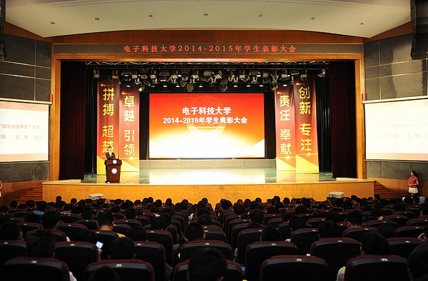
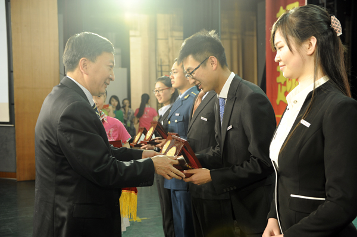

摘要：12月19日下午，电子科技大学2013年学生表彰大会在清水河校区成电会堂隆重举行。校党委书记王志强，校长李言荣，校领导马争、罗佳慧、朱宏、熊彩东、王亚非、杨晓波、申小蓉等出席表彰大会并为获奖者颁奖。王志强为2010级通信工程专业1班等17个班集体颁发201
12月19日下午，电子科技大学2013年学生表彰大会在清水河校区成电会堂隆重举行。校党委书记王志强，校长李言荣，校领导马争、罗佳慧、朱宏、熊彩东、王亚非、杨晓波、申小蓉等出席表彰大会并为获奖者颁奖。
王志强为2010级通信工程专业1班等17个班集体颁发2013年度“陈邦清班集体”荣誉证书；李言荣为通信学院李云等10位本科生和电工学院李中余等10位研究生颁发了“成电杰出学生”荣誉证书。申小蓉副书记宣读了以上表彰决定。
 马争副校长宣读了红旗分团委、学分会、研分会的表彰决定并颁奖，罗佳慧副书记宣读了社会实践优秀团队（个人）、志愿者优秀团队（个人）表彰决定并颁奖，朱宏副校长宣读了各类奖学金获奖者表彰决定并颁奖，熊彩东副校长宣读了优秀班集体、十佳寝室、学生宿舍走廊文化展获奖者表彰决定并颁奖，王亚非副书记宣读了创新创业优秀团队（个人）的表彰决定并颁奖，杨晓波副校长宣读了各类重大赛事获奖者表彰决定并颁奖。
李言荣代表学校对获奖的学生集体和个人表示热烈祝贺，并对一直以来辛勤耕耘、潜心育人的老师们表示衷心感谢。他说，在过去一年里，同学们取得了优异的成绩，从多个方面展示了成电学子的才华。一年一度的学生表彰大会是学校最重要的活动之一，它体现了学校对同学们健康成长的期望和对人才培养质量的关注。

李言荣对同学们提出了三点希望。第一，希望同学们有更高的理想、更大的抱负、更强的报效祖国、服务社会的使命感与责任心。有使命感的人，就会只争朝夕、敢于面对、敢于竞争；有责任心的人，就会有担当，就会想尽办法去努力把事情做好、做细、做精。同学们要进一步聚焦自己努力的方向、正确把握人生的机遇，努力成为行业的精英和民族的栋梁。
第二，希望同学们要善于培养自己的创新思维和能力。在信息化时代，获取知识虽然重要，但不是学习的最终目的。如何自主运用知识进行独立思考和判断，形成自己的见解，最终创造出新的知识，是优秀学生面临的重要课题。同学们从大学高年级到研究生阶段要善于转变学习方法和思维方式，多一些归纳法思维的培养，多一些串联式的、逐渐少一些并联式的学习和实践，努力从复杂的现象中归纳出新的模型、建立起新的原理，从而做到本质上的创新。
第三，希望同学们要有一个健康阳光的身心。要成为优秀人才，为国家和社会做出重要的贡献，离不开强健的体魄和良好的心理素质。大多数后来成功的人从大学开始就非常重视意志的磨练和身体的锻炼。同学们应该积极响应国家提出的“每天锻炼一小时，健康工作五十年，幸福生活一辈子”的号召，加强体育锻炼，在增强体质的同时，磨练自己的意志和忍耐力，培养团队协作的精神。
李言荣说，从优秀到杰出，就意味着学无止境、追求无止境。真心希望同学们继续拓宽自己的专业视野，树立优秀的标准，增强学习的内在动力，把握好时代机遇，在国家需要、社会期望和人生价值实现的和谐统一中成就自己的美好明天。

“6年的成电生活，6年的成电熏陶，让我学会了仰望星空、脚踏实地！”获得“成电杰出学生”荣誉的学生代表、电子工程学院博士生李中余说，“十分感谢学校为我们提供的良好成长环境，感谢各位老师的谆谆教诲，我的梦想在成电，我在这里寻梦、追梦并实现了梦想。”